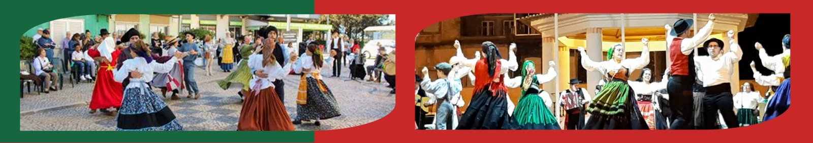
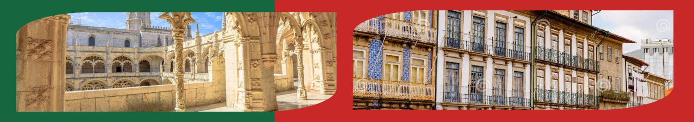
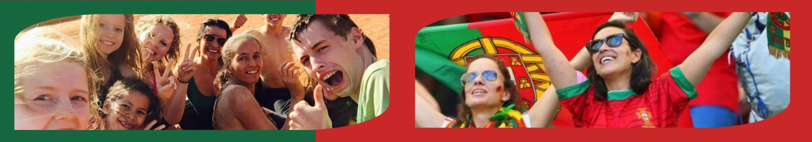

Cultura de Portugal: Tradição, História e Identidade.
Portugal é um país rico em cultura, onde a tradição se entrelaça com a modernidade em cada canto, das aldeias históricas aos centros urbanos vibrantes. Com uma herança marcada por séculos de história, descobertas e intercâmbio cultural, a identidade portuguesa é moldada por influências celtas, romanas, mouras e cristãs. Tudo isso refletido nas artes, na gastronomia, na música e nas festas populares.
Gastronomia que conta histórias
A culinária portuguesa é um verdadeiro retrato da alma do país: simples, mas cheia de sabor. Do icônico bacalhau aos doces conventuais como os pastéis de nata, cada prato carrega uma parte da história e da geografia de Portugal. O vinho do Porto e os vinhos verdes também são parte essencial da cultura, com reconhecimento internacional.
Fado: a alma em forma de música
O Fado, considerado Patrimônio Cultural Imaterial da Humanidade pela UNESCO, é mais do que um estilo musical. É uma expressão profunda do sentimento português conhecido como saudade. Com letras poéticas e melodias marcantes, o Fado ecoa pelas vielas de Alfama e pelas casas de espetáculo tradicionais, emocionando quem escuta.
Arte, Arquitetura e Azulejos
Portugal também é conhecido pela sua arquitetura única, que vai desde os castelos medievais até as construções manuelinas e barrocas. Os azulejos coloridos, presentes em fachadas de edifícios e igrejas, contam histórias visuais do passado e são símbolo da identidade visual portuguesa.
Tradições e festas
As festas populares são outro pilar da cultura portuguesa. O São João no Porto, o Santo António em Lisboa e as romarias no Norte do país celebram os santos padroeiros com música, danças, comidas típicas e muita alegria. Essas festas mantêm viva a ligação entre as pessoas, o território e as raízes culturais.
Um povo acolhedor
Mais do que monumentos e paisagens, o que torna a cultura de Portugal tão especial é o seu povo. Hospitaleiros, orgulhosos da sua história e apaixonados pela sua terra, os portugueses mantêm vivas as tradições enquanto abraçam o mundo com espírito aberto e inovador.
